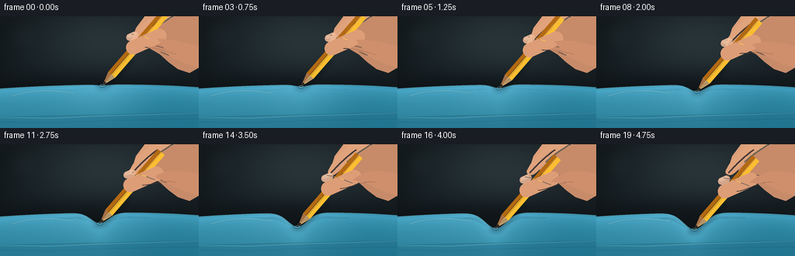
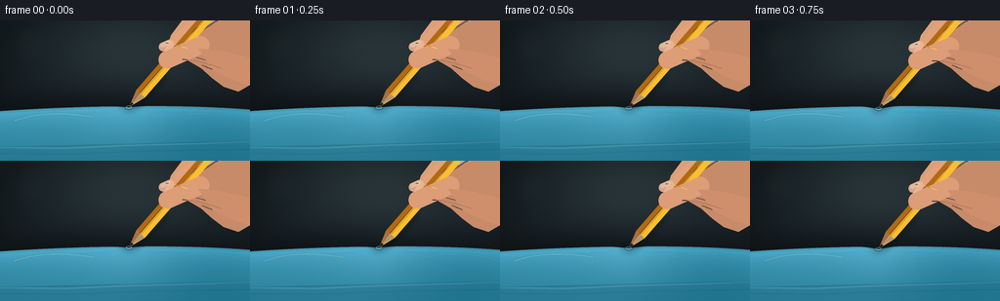

CODING AGENTS AS PIXEL WORLD MODELS
traex/GPT-5.6-Sol · mechanics_0034
点击播放 · 原生 RGB 像素
逐轮保存的候选
回放视频、检查图与代码变化。
每份候选均可单独播放。实际图片检查记录在下方工具轨迹中。
候选 01播放与检查图
点击播放 · 原生 RGB 像素


展开代码变化
--- 上一保存版本
+++ 本次保存版本
@@ -0,0 +1,221 @@
+from pathlib import Path
+import math
+import numpy as np
+from PIL import Image, ImageDraw, ImageFilter
+import artifact_io
+
+W,H,N = 256,144,20
+S=4
+rng=np.random.default_rng(3401)
+
+def scpts(points): return [(int(round(x*S)),int(round(y*S))) for x,y in points]
+def cubic(p0,p1,p2,p3,n=24):
+ out=[]
+ for t in np.linspace(0,1,n):
+ u=1-t
+ out.append((u**3*p0[0]+3*u*u*t*p1[0]+3*u*t*t*p2[0]+t**3*p3[0],
+ u**3*p0[1]+3*u*u*t*p1[1]+3*u*t*t*p2[1]+t**3*p3[1]))
+ return out
+
+def layer(): return Image.new('RGBA',(W*S,H*S),(0,0,0,0))
+def poly(im, pts, fill): ImageDraw.Draw(im).polygon(scpts(pts),fill=fill)
+def line(im, pts, fill, width=1, joint='curve'): ImageDraw.Draw(im).line(scpts(pts),fill=fill,width=max(1,int(width*S)),joint=joint)
+def ellipse(im, box, fill, outline=None, width=1):
+ ImageDraw.Draw(im).ellipse(tuple(int(v*S) for v in box),fill=fill,outline=outline,width=max(1,int(width*S)))
+
+def capsule(center, length, width, angle, color):
+ # anti-aliased rotated capsule already in high-res coordinate system
+ pad=6*S; ww=int((length+12)*S); hh=int((width+12)*S)
+ z=Image.new('RGBA',(ww,hh),(0,0,0,0)); d=ImageDraw.Draw(z)
+ y0=(hh-width*S)/2; y1=(hh+width*S)/2
+ d.rounded_rectangle((pad,y0,ww-pad,y1),radius=width*S/2,fill=color)
+ z=z.rotate(angle,Image.Resampling.BICUBIC,expand=True)
+ pos=(int(center[0]*S-z.width/2),int(center[1]*S-z.height/2))
+ return z,pos
+
+def smoothstep(x): return x*x*(3-2*x)
+
+# fixed fine-grain to keep texture temporally stable
+noise = rng.normal(0,1.0,(H*S,W*S))
+yy,xx=np.mgrid[0:H*S,0:W*S]
+
+frames=[]
+for fi in range(N):
+ t=fi/(N-1)
+ e=smoothstep(t)
+ # charcoal teal macro background
+ X=xx/(W*S); Y=yy/(H*S)
+ base=np.zeros((H*S,W*S,3),dtype=np.float32)
+ base[:,:,0]=27-7*Y+5*X
+ base[:,:,1]=38-9*Y+5*X
+ base[:,:,2]=42-8*Y+6*X
+ # diffuse cool glow behind subject
+ glow=np.exp(-(((X-.52)/.55)**2+((Y-.18)/.44)**2)*2.0)
+ base += glow[:,:,None]*np.array([14,16,16])[None,None,:]
+ vign=np.clip(1-0.34*((X-.5)**2/.3+(Y-.47)**2/.45),.64,1)
+ base*=vign[:,:,None]
+ base += noise[:,:,None]*0.7
+ img=Image.fromarray(np.uint8(np.clip(base,0,255)),'RGB').convert('RGBA')
+
+ # blurred workshop highlights / bokeh
+ bg=layer(); bd=ImageDraw.Draw(bg)
+ for bx,by,rr,c in [(31,26,18,(88,108,105,18)),(75,16,8,(184,173,134,16)),(232,25,20,(112,128,125,18)),(17,78,10,(150,157,144,10))]:
+ bd.ellipse(((bx-rr)*S,(by-rr)*S,(bx+rr)*S,(by+rr)*S),fill=c)
+ bg=bg.filter(ImageFilter.GaussianBlur(10*S)); img=Image.alpha_composite(img,bg)
+
+ # shadow behind glove horizon
+ sh=layer(); sd=ImageDraw.Draw(sh)
+ sd.ellipse((0,76*S,W*S,125*S),fill=(0,0,0,105))
+ sh=sh.filter(ImageFilter.GaussianBlur(11*S)); img=Image.alpha_composite(img,sh)
+
+ # physical press: initially kissing surface, then 21 px depression
+ depth=1.0+20.5*e
+ cx=132.0-5.8*e
+ sigma=10.5+9.0*e
+ xs=np.linspace(-3,W+3,W*S+1)
+ baseline=87.2 + .00034*(xs-132)**2 + 1.0*np.sin(xs/60.0)
+ profile=baseline + depth*np.exp(-((xs-cx)/sigma)**2)
+
+ # rubber glove body with depth-aware smooth shading
+ prof_pix=np.interp(np.arange(W*S)/S,xs,profile)*S
+ dist=yy-prof_pix[None,:]
+ mask=dist>=0
+ glove=np.zeros((H*S,W*S,4),dtype=np.uint8)
+ # blue nitrile / thin rubber color, luminous at stretched top
+ top_hi=38*np.exp(-np.maximum(dist,0)/12/S)
+ low=-18*np.clip(np.maximum(dist,0)/(65*S),0,1)
+ side=7*np.exp(-((X-.28)/.35)**2)-6*np.exp(-((X-.87)/.24)**2)
+ stretch=12*np.exp(-(((X-cx/W)/(.19+.03*e))**2+((Y-.68)/.28)**2))
+ gnoise=noise*.9
+ channels=[52,139,165]
+ for k,c in enumerate(channels):
+ mult=[.58,.82,1.0][k]
+ val=c+mult*top_hi+low+side+stretch+gnoise
+ glove[:,:,k]=np.where(mask,np.clip(val,0,255),0).astype(np.uint8)
+ glove[:,:,3]=np.where(mask,255,0).astype(np.uint8)
+ img=Image.alpha_composite(img,Image.fromarray(glove,'RGBA'))
+
+ # cuff panel at bottom: clearly a wearable glove
+ cuff=layer(); cd=ImageDraw.Draw(cuff)
+ cd.polygon(scpts([(0,130),(256,124),(256,144),(0,144)]),fill=(35,112,140,125))
+ line(cuff,[(0,130),(65,131),(132,128),(205,126),(256,124)],(130,204,215,95),1.0)
+ line(cuff,[(0,136),(68,137),(145,134),(256,132)],(21,83,112,90),1.0)
+ cuff=cuff.filter(ImageFilter.GaussianBlur(.45*S)); img=Image.alpha_composite(img,cuff)
+
+ # deformation highlights and radiating tension wrinkles
+ details=layer()
+ # crisp meniscus / surface edge, strongest around contact
+ ppts=[(x,float(np.interp(x,xs,profile))) for x in np.linspace(0,W,220)]
+ line(details,ppts,(150,220,226,145),.75)
+ line(details,[(x,y+1.5) for x,y in ppts],(19,92,120,75),.7)
+ # wrinkles become more visible as the film stretches
+ amp=e
+ for side_sign,off,leng in [(-1,3,30),(-1,8,47),(-1,13,65),(1,4,31),(1,9,47),(1,15,66)]:
+ x0=cx+side_sign*(sigma*.42+off)
+ x1=cx+side_sign*leng
+ pts=[]
+ for q in np.linspace(0,1,30):
+ x=x0+(x1-x0)*q
+ py=float(np.interp(x,xs,profile))+3.0+q*3.5+math.sin(q*math.pi)*1.1
+ pts.append((x,py))
+ line(details,pts,(25,96,123,int(20+55*amp)),.75)
+ line(details,[(x,y-1.0) for x,y in pts],(148,211,218,int(12+35*amp)),.55)
+ # elongated glossy reflections on curved glove
+ line(details,cubic((14,103),(41,93),(70,95),(96,99)),(170,226,229,66),2.0)
+ line(details,cubic((174,100),(204,91),(236,96),(258,104)),(138,210,220,42),1.7)
+ details=details.filter(ImageFilter.GaussianBlur(.45*S)); img=Image.alpha_composite(img,details)
+
+ # tip position exactly at deepest film surface
+ tip=(cx,float(np.interp(cx,xs,profile))-.25)
+ axis=np.array([0.655,-0.756]) # from tip toward eraser/top-right
+ perp=np.array([0.756,0.655])
+ tp=np.array(tip)
+ woodbase=tp+axis*18.0
+ end=tp+axis*121.0
+
+ # pencil/contact shadow, cast onto rubber
+ ps=layer()
+ shadow_start=tp+np.array([2.5,3.0]); shadow_end=tp+axis*52+np.array([4,6])
+ line(ps,[tuple(shadow_start),tuple(shadow_end)],(3,24,31,115),5.4)
+ ellipse(ps,(tip[0]-8,tip[1]-2.2,tip[0]+8,tip[1]+5.2),(2,41,54,int(75+35*e)))
+ ps=ps.filter(ImageFilter.GaussianBlur(3.0*S)); img=Image.alpha_composite(img,ps)
+
+ # rear portion of pressing hand; it travels with the pencil
+ grip=tp+axis*82
+ hand=layer()
+ # broad palm/back entering from upper-right
+ palm=[(grip[0]+5,grip[1]-25),(225,-8),(256,-6),(256,66),
+ (244,73),(229,68),(217,59),(206,49),(194,42),(183,35)]
+ poly(hand,palm,(199,139,105,255))
+ # warm lit inner gradient-like lobes
+ poly(hand,cubic((205,-4),(203,8),(198,18),(185,30))+cubic((185,30),(178,38),(173,42),(168,38))+[(175,15),(190,-5)],(220,159,120,255))
+ # index finger curled down behind pencil
+ idx=cubic((235,-3),(221,1),(206,10),(192,22))+cubic((192,22),(183,28),(176,34),(172,38))+cubic((172,38),(168,40),(165,37),(167,33))+cubic((167,33),(176,15),(192,2),(204,-4))
+ poly(hand,idx,(224,163,124,255))
+ # shadow under curled index
+ line(hand,cubic((203,7),(192,14),(178,28),(170,37)),(139,82,67,80),2.2)
+ # subtle palm creases
+ line(hand,cubic((231,48),(220,43),(210,40),(201,38)),(135,79,65,65),.75)
+ line(hand,cubic((246,58),(229,55),(216,50),(207,46)),(239,181,139,65),1.0)
+ # warm top lighting
+ line(hand,cubic((224,-1),(212,6),(200,14),(191,23)),(255,207,160,90),2.3)
+ img=Image.alpha_composite(img,hand)
+
+ # pencil, between index (behind) and thumb (front)
+ pen=layer()
+ shaft_w=5.8
+ # full hexagonal shaft
+ a=woodbase+perp*shaft_w; b=end+perp*shaft_w; c=end-perp*shaft_w; d=woodbase-perp*shaft_w
+ poly(pen,[tuple(a),tuple(b),tuple(c),tuple(d)],(235,165,30,255))
+ # three long facets
+ poly(pen,[tuple(woodbase+perp*shaft_w),tuple(end+perp*shaft_w),tuple(end+perp*1.0),tuple(woodbase+perp*1.0)],(252,190,47,255))
+ poly(pen,[tuple(woodbase-perp*1.0),tuple(end-perp*1.0),tuple(end-perp*shaft_w),tuple(woodbase-perp*shaft_w)],(179,105,18,255))
+ line(pen,[tuple(woodbase+perp*1.0),tuple(end+perp*1.0)],(255,218,91,180),.65)
+ line(pen,[tuple(woodbase-perp*1.0),tuple(end-perp*1.0)],(112,72,25,105),.55)
+ # exposed sharpened cedar triangle, asymmetrically shaded
+ poly(pen,[tuple(tp),tuple(woodbase+perp*shaft_w),tuple(woodbase-perp*shaft_w)],(221,170,103,255))
+ poly(pen,[tuple(tp),tuple(woodbase-perp*.4),tuple(woodbase-perp*shaft_w)],(166,112,68,255))
+ poly(pen,[tuple(tp+axis*5.1),tuple(woodbase+perp*shaft_w),tuple(woodbase+perp*.7)],(239,194,130,190))
+ # sharp graphite point
+ graphite=tp+axis*5.4
+ poly(pen,[tuple(tp),tuple(graphite+perp*1.35),tuple(graphite-perp*1.35)],(36,34,31,255))
+ line(pen,[tuple(tp),tuple(graphite)],(10,18,20,235),.65)
+ # tiny gleam on wood
+ line(pen,[tuple(tp+axis*6+perp*.9),tuple(woodbase+perp*1.7)],(255,229,177,145),.55)
+ img=Image.alpha_composite(img,pen)
+
+ # foreground thumb wraps around the pencil
+ thumb=layer()
+ thumb_center=tuple(grip + np.array([3.0,6.0]))
+ cap,pos=capsule(thumb_center,55,18,-156,(220,157,119,255))
+ thumb.alpha_composite(cap,dest=pos)
+ # shape connection to palm
+ join=cubic((thumb_center[0]+14,thumb_center[1]-4),(219,29),(241,34),(258,39))+[(258,67),(239,61),(218,51)]
+ poly(thumb,join,(207,143,108,255))
+ # thumbnail on near end of thumb, rotated capsule
+ nail_center=(thumb_center[0]-18,thumb_center[1]-7)
+ nail,npos=capsule(nail_center,16,9,-156,(235,183,151,225))
+ thumb.alpha_composite(nail,dest=npos)
+ # nail highlight and rim
+ hi,hpos=capsule((nail_center[0]-1,nail_center[1]-1.5),11,4,-156,(255,218,188,90))
+ thumb.alpha_composite(hi,dest=hpos)
+ # thumb joint shadow / highlight
+ line(thumb,cubic((thumb_center[0]-2,thumb_center[1]+7),(thumb_center[0]+10,thumb_center[1]+7),(215,45),(227,49)),(132,75,63,70),1.0)
+ line(thumb,cubic((thumb_center[0]-19,thumb_center[1]-10),(thumb_center[0]-7,thumb_center[1]-9),(thumb_center[0]+5,thumb_center[1]-3),(thumb_center[0]+14,thumb_center[1])),(255,205,163,85),1.0)
+ img=Image.alpha_composite(img,thumb)
+
+ # contact glint/rim directly around graphite, indicating taut film rather than a hole
+ contact=layer()
+ ellipse(contact,(tip[0]-2.9,tip[1]-1.1,tip[0]+2.9,tip[1]+1.5),(0,0,0,0),outline=(176,229,229,165),width=.55)
+ # front crescent of rubber overlaps the point minutely
+ arc=ImageDraw.Draw(contact)
+ arc.arc(tuple(int(v*S) for v in (tip[0]-4.3,tip[1]-2.2,tip[0]+4.3,tip[1]+3.1)),5,175,fill=(22,93,117,185),width=max(1,int(.8*S)))
+ img=Image.alpha_composite(img,contact)
+
+ # cinematic final downsample
+ out=img.convert('RGB').resize((W,H),Image.Resampling.LANCZOS)
+ frames.append(np.asarray(out,dtype=np.uint8))
+
+frames=np.stack(frames)
+artifact_io.save(frames,Path(__file__).resolve().parent)
+print('saved',frames.shape,frames.dtype)
可观测工具轨迹
实际执行的命令与返回图片。
命令 1exit 0
/bin/bash -lc "cat prompt.txt && printf '\\n---RULES---\\n' && cat GENERATION_RULES.md && printf '\\n---SPEC---\\n' && cat task_spec.json"
命令 2exit 0
/bin/bash -lc "find . -maxdepth 2 -type f -printf '%p\\n' | sort | head -200"
命令 3exit 0
/bin/bash -lc 'cat artifact_io.py'
命令 4exit 0
/bin/bash -lc "cat > generate.py <<'PY'
from pathlib import Path
import math
import numpy as np
from PIL import Image, ImageDraw, ImageFilter
import artifact_io
W,H,N = 256,144,20
S=4
rng=np.random.default_rng(3401)
def scpts(points): return [(int(round(x*S)),int(round(y*S))) for x,y in points]
def cubic(p0,p1,p2,p3,n=24):
out=[]
for t in np.linspace(0,1,n):
u=1-t
out.append((u**3*p0[0]+3*u*u*t*p1[0]+3*u*t*t*p2[0]+t**3*p3[0],
u**3*p0[1]+3*u*u*t*p1[1]+3*u*t*t*p2[1]+t**3*p3[1]))
return out
def layer(): return Image.new('RGBA',(W*S,H*S),(0,0,0,0))
def poly(im, pts, fill): ImageDraw.Draw(im).polygon(scpts(pts),fill=fill)
def line(im, pts, fill, width=1, joint='curve'): ImageDraw.Draw(im).line(scpts(pts),fill=fill,width=max(1,int(width*S)),joint=joint)
def ellipse(im, box, fill, outline=None, width=1):
ImageDraw.Draw(im).ellipse(tuple(int(v*S) for v in box),fill=fill,outline=outline,width=max(1,int(width*S)))
def capsule(center, length, width, angle, color):
# anti-aliased rotated capsule already in high-res coordinate system
pad=6*S; ww=int((length+12)*S); hh=int((width+12)*S)
z=Image.new('RGBA',(ww,hh),(0,0,0,0)); d=ImageDraw.Draw(z)
y0=(hh-width*S)/2; y1=(hh+width*S)/2
d.rounded_rectangle((pad,y0,ww-pad,y1),radius=width*S/2,fill=color)
z=z.rotate(angle,Image.Resampling.BICUBIC,expand=True)
pos=(int(center[0]*S-z.width/2),int(center[1]*S-z.height/2))
return z,pos
def smoothstep(x): return x*x*(3-2*x)
# fixed fine-grain to keep texture temporally stable
noise = rng.normal(0,1.0,(H*S,W*S))
yy,xx=np.mgrid[0:H*S,0:W*S]
frames=[]
for fi in range(N):
t=fi/(N-1)
e=smoothstep(t)
# charcoal teal macro background
X=xx/(W*S); Y=yy/(H*S)
base=np.zeros((H*S,W*S,3),dtype=np.float32)
base[:,:,0]=27-7*Y+5*X
base[:,:,1]=38-9*Y+5*X
base[:,:,2]=42-8*Y+6*X
# diffuse cool glow behind subject
glow=np.exp(-(((X-.52)/.55)**2+((Y-.18)/.44)**2)*2.0)
base += glow[:,:,None]*np.array([14,16,16])[None,None,:]
vign=np.clip(1-0.34*((X-.5)**2/.3+(Y-.47)**2/.45),.64,1)
base*=vign[:,:,None]
base += noise[:,:,None]*0.7
img=Image.fromarray(np.uint8(np.clip(base,0,255)),'RGB').convert('RGBA')
# blurred workshop highlights / bokeh
bg=layer(); bd=ImageDraw.Draw(bg)
for bx,by,rr,c in [(31,26,18,(88,108,105,18)),(75,16,8,(184,173,134,16)),(232,25,20,(112,128,125,18)),(17,78,10,(150,157,144,10))]:
bd.ellipse(((bx-rr)*S,(by-rr)*S,(bx+rr)*S,(by+rr)*S),fill=c)
bg=bg.filter(ImageFilter.GaussianBlur(10*S)); img=Image.alpha_composite(img,bg)
# shadow behind glove horizon
sh=layer(); sd=ImageDraw.Draw(sh)
sd.ellipse((0,76*S,W*S,125*S),fill=(0,0,0,105))
sh=sh.filter(ImageFilter.GaussianBlur(11*S)); img=Image.alpha_composite(img,sh)
# physical press: initially kissing surface, then 21 px depression
depth=1.0+20.5*e
cx=132.0-5.8*e
sigma=10.5+9.0*e
xs=np.linspace(-3,W+3,W*S+1)
baseline=87.2 + .00034*(xs-132)**2 + 1.0*np.sin(xs/60.0)
profile=baseline + depth*np.exp(-((xs-cx)/sigma)**2)
# rubber glove body with depth-aware smooth shading
prof_pix=np.interp(np.arange(W*S)/S,xs,profile)*S
dist=yy-prof_pix[None,:]
mask=dist>=0
glove=np.zeros((H*S,W*S,4),dtype=np.uint8)
# blue nitrile / thin rubber color, luminous at stretched top
top_hi=38*np.exp(-np.maximum(dist,0)/12/S)
low=-18*np.clip(np.maximum(dist,0)/(65*S),0,1)
side=7*np.exp(-((X-.28)/.35)**2)-6*np.exp(-((X-.87)/.24)**2)
stretch=12*np.exp(-(((X-cx/W)/(.19+.03*e))**2+((Y-.68)/.28)**2))
gnoise=noise*.9
channels=[52,139,165]
for k,c in enumerate(channels):
mult=[.58,.82,1.0][k]
val=c+mult*top_hi+low+side+stretch+gnoise
glove[:,:,k]=np.where(mask,np.clip(val,0,255),0).astype(np.uint8)
glove[:,:,3]=np.where(mask,255,0).astype(np.uint8)
img=Image.alpha_composite(img,Image.fromarray(glove,'RGBA'))
# cuff panel at bottom: clearly a wearable glove
cuff=layer(); cd=ImageDraw.Draw(cuff)
cd.polygon(scpts([(0,130),(256,124),(256,144),(0,144)]),fill=(35,112,140,125))
line(cuff,[(0,130),(65,131),(132,128),(205,126),(256,124)],(130,204,215,95),1.0)
line(cuff,[(0,136),(68,137),(145,134),(256,132)],(21,83,112,90),1.0)
cuff=cuff.filter(ImageFilter.GaussianBlur(.45*S)); img=Image.alpha_composite(img,cuff)
# deformation highlights and radiating tension wrinkles
details=layer()
# crisp meniscus / surface edge, strongest around contact
ppts=[(x,float(np.interp(x,xs,profile))) for x in np.linspace(0,W,220)]
line(details,ppts,(150,220,226,145),.75)
line(details,[(x,y+1.5) for x,y in ppts],(19,92,120,75),.7)
# wrinkles become more visible as the film stretches
amp=e
for side_sign,off,leng in [(-1,3,30),(-1,8,47),(-1,13,65),(1,4,31),(1,9,47),(1,15,66)]:
x0=cx+side_sign*(sigma*.42+off)
x1=cx+side_sign*leng
pts=[]
for q in np.linspace(0,1,30):
x=x0+(x1-x0)*q
py=float(np.interp(x,xs,profile))+3.0+q*3.5+math.sin(q*math.pi)*1.1
pts.append((x,py))
line(details,pts,(25,96,123,int(20+55*amp)),.75)
line(details,[(x,y-1.0) for x,y in pts],(148,211,218,int(12+35*amp)),.55)
# elongated glossy reflections on curved glove
line(details,cubic((14,103),(41,93),(70,95),(96,99)),(170,226,229,66),2.0)
line(details,cubic((174,100),(204,91),(236,96),(258,104)),(138,210,220,42),1.7)
details=details.filter(ImageFilter.GaussianBlur(.45*S)); img=Image.alpha_composite(img,details)
# tip position exactly at deepest film surface
tip=(cx,float(np.interp(cx,xs,profile))-.25)
axis=np.array([0.655,-0.756]) # from tip toward eraser/top-right
perp=np.array([0.756,0.655])
tp=np.array(tip)
woodbase=tp+axis*18.0
end=tp+axis*121.0
# pencil/contact shadow, cast onto rubber
ps=layer()
shadow_start=tp+np.array([2.5,3.0]); shadow_end=tp+axis*52+np.array([4,6])
line(ps,[tuple(shadow_start),tuple(shadow_end)],(3,24,31,115),5.4)
ellipse(ps,(tip[0]-8,tip[1]-2.2,tip[0]+8,tip[1]+5.2),(2,41,54,int(75+35*e)))
ps=ps.filter(ImageFilter.GaussianBlur(3.0*S)); img=Image.alpha_composite(img,ps)
# rear portion of pressing hand; it travels with the pencil
grip=tp+axis*82
hand=layer()
# broad palm/back entering from upper-right
palm=[(grip[0]+5,grip[1]-25),(225,-8),(256,-6),(256,66),
(244,73),(229,68),(217,59),(206,49),(194,42),(183,35)]
poly(hand,palm,(199,139,105,255))
# warm lit inner gradient-like lobes
poly(hand,cubic((205,-4),(203,8),(198,18),(185,30))+cubic((185,30),(178,38),(173,42),(168,38))+[(175,15),(190,-5)],(220,159,120,255))
# index finger curled down behind pencil
idx=cubic((235,-3),(221,1),(206,10),(192,22))+cubic((192,22),(183,28),(176,34),(172,38))+cubic((172,38),(168,40),(165,37),(167,33))+cubic((167,33),(176,15),(192,2),(204,-4))
poly(hand,idx,(224,163,124,255))
# shadow under curled index
line(hand,cubic((203,7),(192,14),(178,28),(170,37)),(139,82,67,80),2.2)
# subtle palm creases
line(hand,cubic((231,48),(220,43),(210,40),(201,38)),(135,79,65,65),.75)
line(hand,cubic((246,58),(229,55),(216,50),(207,46)),(239,181,139,65),1.0)
# warm top lighting
line(hand,cubic((224,-1),(212,6),(200,14),(191,23)),(255,207,160,90),2.3)
img=Image.alpha_composite(img,hand)
# pencil, between index (behind) and thumb (front)
pen=layer()
shaft_w=5.8
# full hexagonal shaft
a=woodbase+perp*shaft_w; b=end+perp*shaft_w; c=end-perp*shaft_w; d=woodbase-perp*shaft_w
poly(pen,[tuple(a),tuple(b),tuple(c),tuple(d)],(235,165,30,255))
# three long facets
poly(pen,[tuple(woodbase+perp*shaft_w),tuple(end+perp*shaft_w),tuple(end+perp*1.0),tuple(woodbase+perp*1.0)],(252,190,47,255))
poly(pen,[tuple(woodbase-perp*1.0),tuple(end-perp*1.0),tuple(end-perp*shaft_w),tuple(woodbase-perp*shaft_w)],(179,105,18,255))
line(pen,[tuple(woodbase+perp*1.0),tuple(end+perp*1.0)],(255,218,91,180),.65)
line(pen,[tuple(woodbase-perp*1.0),tuple(end-perp*1.0)],(112,72,25,105),.55)
# exposed sharpened cedar triangle, asymmetrically shaded
poly(pen,[tuple(tp),tuple(woodbase+perp*shaft_w),tuple(woodbase-perp*shaft_w)],(221,170,103,255))
poly(pen,[tuple(tp),tuple(woodbase-perp*.4),tuple(woodbase-perp*shaft_w)],(166,112,68,255))
poly(pen,[tuple(tp+axis*5.1),tuple(woodbase+perp*shaft_w),tuple(woodbase+perp*.7)],(239,194,130,190))
# sharp graphite point
graphite=tp+axis*5.4
poly(pen,[tuple(tp),tuple(graphite+perp*1.35),tuple(graphite-perp*1.35)],(36,34,31,255))
line(pen,[tuple(tp),tuple(graphite)],(10,18,20,235),.65)
# tiny gleam on wood
line(pen,[tuple(tp+axis*6+perp*.9),tuple(woodbase+perp*1.7)],(255,229,177,145),.55)
img=Image.alpha_composite(img,pen)
# foreground thumb wraps around the pencil
thumb=layer()
thumb_center=tuple(grip + np.array([3.0,6.0]))
cap,pos=capsule(thumb_center,55,18,-156,(220,157,119,255))
thumb.alpha_composite(cap,dest=pos)
# shape connection to palm
join=cubic((thumb_center[0]+14,thumb_center[1]-4),(219,29),(241,34),(258,39))+[(258,67),(239,61),(218,51)]
poly(thumb,join,(207,143,108,255))
# thumbnail on near end of thumb, rotated capsule
nail_center=(thumb_center[0]-18,thumb_center[1]-7)
nail,npos=capsule(nail_center,16,9,-156,(235,183,151,225))
thumb.alpha_composite(nail,dest=npos)
# nail highlight and rim
hi,hpos=capsule((nail_center[0]-1,nail_center[1]-1.5),11,4,-156,(255,218,188,90))
thumb.alpha_composite(hi,dest=hpos)
# thumb joint shadow / highlight
line(thumb,cubic((thumb_center[0]-2,thumb_center[1]+7),(thumb_center[0]+10,thumb_center[1]+7),(215,45),(227,49)),(132,75,63,70),1.0)
line(thumb,cubic((thumb_center[0]-19,thumb_center[1]-10),(thumb_center[0]-7,thumb_center[1]-9),(thumb_center[0]+5,thumb_center[1]-3),(thumb_center[0]+14,thumb_center[1])),(255,205,163,85),1.0)
img=Image.alpha_composite(img,thumb)
# contact glint/rim directly around graphite, indicating taut film rather than a hole
contact=layer()
ellipse(contact,(tip[0]-2.9,tip[1]-1.1,tip[0]+2.9,tip[1]+1.5),(0,0,0,0),outline=(176,229,229,165),width=.55)
# front crescent of rubber overlaps the point minutely
arc=ImageDraw.Draw(contact)
arc.arc(tuple(int(v*S) for v in (tip[0]-4.3,tip[1]-2.2,tip[0]+4.3,tip[1]+3.1)),5,175,fill=(22,93,117,185),width=max(1,int(.8*S)))
img=Image.alpha_composite(img,contact)
# cinematic final downsample
out=img.convert('RGB').resize((W,H),Image.Resampling.LANCZOS)
frames.append(np.asarray(out,dtype=np.uint8))
frames=np.stack(frames)
artifact_io.save(frames,Path(__file__).resolve().parent)
print('saved',frames.shape,frames.dtype)
PY
python generate.py
ls -lh pixels.npz inspection.png index.html frames/00.png frames/19.png"命令 5exit 0
/bin/bash -lc "python - <<'PY'
import numpy as np
from PIL import Image
fs=np.stack([np.array(Image.open(f'frames/{i:02}.png')) for i in range(20)])
for i in [0,1,2,5,10,15,19]:
print(i, fs[i].mean((0,1)).round(1), 'diff', (np.abs(fs[i].astype(int)-fs[0].astype(int))).mean().round(2))
# gif useful artifact optional
Image.open('frames/00.png').save('.tmp/preview.gif',save_all=True,append_images=[Image.open(f'frames/{i:02}.png') for i in range(1,20)],duration=250,loop=0)
print('gif',__import__('os').path.getsize('.tmp/preview.gif'))
PY"保存候选 1 份；完成命令 5 次；可验证图片返回 0 张。原始 API 响应与完整日志保留在本地。